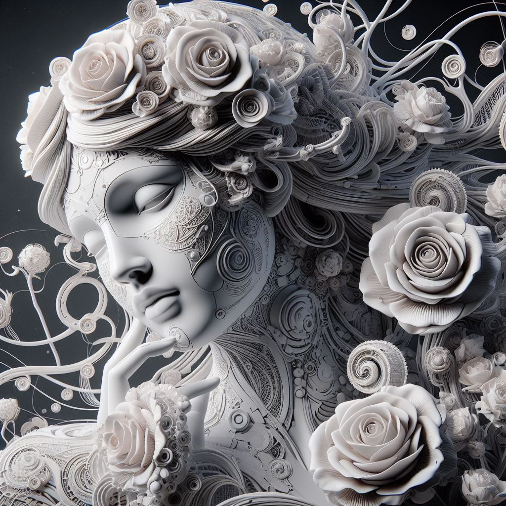

Un'esperienza immersiva nell'arte digitale che sfida i confini della realtà
17-18 Marzo 2024 | Galleria d'Arte Moderna, Milano
Esplora la Galleria
Lucio Giolli è un visionario nell'arte digitale, noto per le sue opere che sfidano i confini tra realtà e immaginazione. La sua mostra "Visioni Digitali 2024" è un viaggio mozzafiato attraverso ritratti influenzati dalla tecnologia e dalla classicità, creando un ponte unico tra passato e futuro.
Preparatevi a essere trasportati in un mondo dove l'arte digitale prende vita, sfidando le vostre percezioni e stimolando la vostra immaginazione. Ogni opera di Giolli è un invito a esplorare nuove dimensioni dell'espressione artistica.